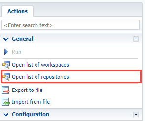
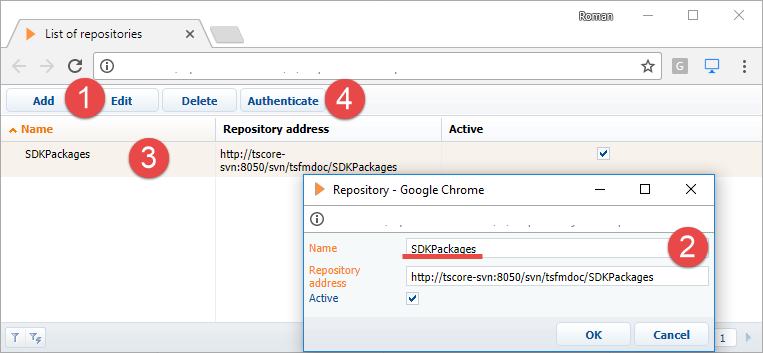

Последовательность привязки существующего пакета к хранилищу
- Перейти в режим разработки в файловой системе.
- Выгрузить пакет в файловую систему.
- Создать необходимые каталоги для пакета в хранилище SVN.
- Создать рабочую копию версионной ветки пакета.
- Зафиксировать в хранилище каталог пакета.
Альтернативный вариант привязки пакета к хранилищу — через прямой запрос в базу данных. Для этого необходимо:
- В разделе Конфигурация добавить в приложение информацию о хранилище SVN.
- Привязать хранилище к пакету. Для этого:
- В таблице SysRepository считать идентификатор записи, содержащей адрес нужного хранилища SVN.
- В таблице SysPackage в запись, содержащую имя не привязанного к хранилищу SVN пакета, в колонку SysRepositoryId добавить полученный идентификатор.
Алгоритм реализации примера
1. Перейти в режим разработки в файловой системе
2. Выгрузить пакет в файловую систему
В разделе Конфигурация (Configuration) выполнить действие Выгрузить пакеты в файловую систему (Download packages to file system).
В результате пакет будет выгружен в каталог ..\Terrasoft.WebApp\Terrasoft.Configuration\Pkg\UsrUnboundPackage.
3. Создать необходимые каталоги для пакета в хранилище SVN
Чтобы создать каталоги для пакета, используя клиентское приложение для работы с SVN (например, TortoiseSvn), необходимо перейти в репозиторий и создать каталог, название которого совпадает с названием пакета.
В созданном каталоге необходимо создать подкаталоги branches и tags, т.е. повторить плоскую структуру пакетов Creatio. В завершение в каталоге branches необходимо создать каталог, название которого совпадает с номером версии пакета — 7.11.0.
4. Создать рабочую копию версионной ветки пакета
Чтобы создать рабочую копию версионной ветки пакета, необходимо выгрузить из хранилища каталог, имя которого совпадает с номером версии пакета (SVN Checkout), в каталог пакета в файловой системе и подтвердить выгрузку в существующий каталог.
В результате каталог пакета в файловой системе ..\Terrasoft.WebApp\Terrasoft.Configuration\Pkg\UsrUnboundPackage станет рабочей копией пакета версии 7.11.0 в хранилище.
5. Зафиксировать в хранилище каталог пакета
Чтобы зафиксировать в хранилище все содержимое каталога пакета, необходимо выполнить команду Add... приложения TortoiseSVN, а затем выполнить команду SVN Commit....
В результате все содержимое пакета будет привязано к хранилищу SVN.
Альтернативный вариант реализации примера
1. В разделе Конфигурация добавить в приложение информацию о хранилище SVN
Если информация о нужном хранилище не добавлена в разделе Конфигурация приложения, то необходимо:
- Выполнить команду Открыть список хранилищ (Open list of repositories).

- В открывшемся окне Список хранилищ (List of repositories) при помощи команды Добавить (1) добавить необходимый репозиторий (2). После этого информация о репозитории отобразится в окне Список хранилищ (3). Затем необходимо выделить строку с информацией о хранилище и выполнить аутентификацию (4).

2. Привязать хранилище к пакету
Для этого необходимо выполнить SQL- запрос в базу данных приложения.
Здесь SDKPackages — название хранилища, а UsrUnboundPackage — название пользовательского пакета.
3. Выгрузить пакет в файловую систему
В разделе Конфигурация (Configuration) выполнить действие Выгрузить пакеты в файловую систему (Download packages to file system). В результате привязанный к хранилищу пакет будет выгружен в каталог ..\Terrasoft.WebApp\Terrasoft.Configuration\Pkg\UsrUnboundPackage.